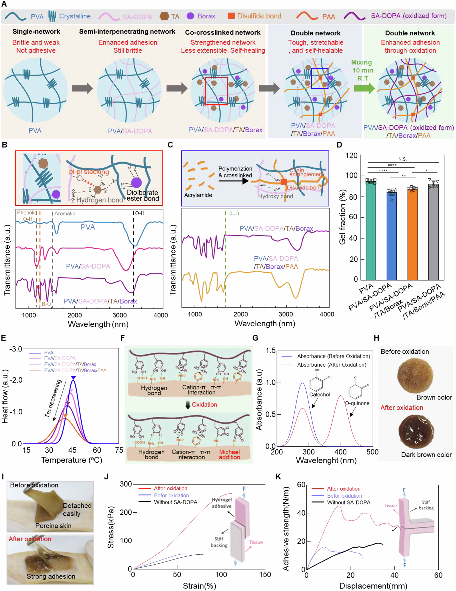

Research context and placement
A double-network hydrogel bonds to wet tissue through quinone-mediated interactions. Public-text evidence on patch and injectable applications in animal bleeding and incision models supports placement in wet tissue adhesion.
Research background
Wet, moving tissue presents water, irregular geometry and deformation at once. STAT combines a hydrated gel with tissue-binding chemistry. Establishing conformal contact and sustaining that contact under load are connected but distinct requirements.
Approach and advances
The double-network design links quinone-mediated tissue binding with tannic acid-associated hemostatic functions. Conformability and binding are designed together. The absence of a separate activation step at application does not mean that oxidation control is absent during preparation.

Network formation, oxidation, structural characterization and porcine-skin adhesion measurements for STAT.
Tae Young Kim, Kayoung Son, Chang-Hwan Moon et al.. “Quinone-mediated, tissue-adaptive double-network hydrogel for instant hemostasis and wet-tissue adhesion”. Figure 2. DOI: 10.1038/s41467-026-72068-6. CC BY 4.0. Existing lossless WebP asset reused; original figure pixel content unchanged.
Source figure and caption ↗ · DOI: 10.1038/s41467-026-72068-6 ↗ · CC BY 4.0 ↗
Evaluation and conditions
Adhesion tests depend on tissue, hydration, contact conditions and loading direction. Shear stress and peel energy are not interchangeable performance measures. Animal bleeding outcomes also address a different question and cannot substitute for adhesion testing on every tissue.
Key findings
Before oxidation, the gel adhered to porcine skin but detached readily, whereas oxidized STAT resisted removal. Increased adhesion in both shear and 180-degree peel tests links catechol-to-quinone conversion to bonding, beyond conformability alone. These are tissue- and test-specific observations, not established effects in every tissue or human surgery.
Limits and open questions
Fair comparisons require matched tissue, contact duration, loading and gel state. Storage, repeated deformation and longer-term tissue response need their own evidence. Read main-text explanations are distinguished from unaudited supplements; no clinical protocol is proposed.
Related external research
Dry double-sided tape for adhesion of wet tissues and devices
DOI: 10.1038/s41586-019-1710-5 ↗
The publisher abstract describes a dry tape that absorbs interfacial water before covalent bonding, offering a mechanistic contrast to hydrated STAT.
This is an abstract-based mechanism comparison, not a ranking of adhesion time or hemostasis across different models.
Abstract checkedCorresponding-author verification
Jungmok Seo: corresponding authorThis record concerns Jungmok Seo’s correspondence designation. Author order or an asterisk alone is not treated as confirmation; this check is separate from verification of the research content.
- Correspondence evidence source ↗
Correspondence and requests for materials should be addressed to Jungmok Seo.
Published PDF page 19: correspondence/author information; title and DOI page 1 · local_published_pdf_read
- Main-text review scope
- Publisher metadata, abstract, and selected design, adhesion, animal-evaluation and methods sections were checked; supplements remain unaudited. Rechecked the pre-/post-oxidation skin-adhesion comparison on p. 6 and adhesion-test methods in the matching local published PDF.
- Supplementary review scope
- Supporting information was not comprehensively read. A main-text citation to supplementary results does not count as direct inspection of those results.
- Pending verification
- Reconcile supplements/source data in school Chrome. CC BY 4.0 is stated; third-party figure rights remain separate.
COVERAGE & OUTREACH
Coverage and outreach
Links are checked for their relationship to this paper. Media publication does not establish independent reporting or additional experimental validation.
서정목 교수팀, 젖은 조직에 즉시 접착·지혈하는 이중네트워크 하이드로겔 개발 ↗
STAT, the Seo/Kim/Son team and Nature Communications identify #92.
Body read The official research announcement title, date and body were read.
연세대, 젖은 조직에도 신속 접착·지혈 소재 개발 ↗
The STAT hydrogel, Seo team and Nature Communications match.
Body read The accessible body identifies the study; an absolute date was not visible in the retrieved text. It is classified as release-based coverage.
연세대 서정목 교수팀, 젖은 조직에 즉시 접착·지혈하는 하이드로겔 개발 ↗
STAT, authors and journal match #92 and the Yonsei announcement.
Body read After a web-tool error, a normal public HTTP fetch exposed the title, date and body. Its narrative and quotations track the release.
연세대학교 서정목 교수팀, 10초 만에 젖은 조직 붙이고 출혈 막는 차세대 하이드로겔 개발 ↗
The STAT hydrogel, Seo team and Nature Communications match.
Body read A normal public HTTP fetch exposed the title, date and body after the web-tool error. It reworks the institutional release; headline efficacy language was not independently validated.
STAT Hydrogel Stops Bleeding in Seconds Without Sutures ↗
The exact paper title, STAT name and authors match #92.
Body read The public post and linked paper title were read. Only a relative timestamp was shown, so the date is null. This is author promotion, not independent validation.
Jungmok Seo: A Quinone-Activated Hydrogel for Second-Scale Hemostasis and Suture-Free Surgical Sealing ↗
The exact #92 title, author list and Nature link are present; the page explicitly quotes Seo's LinkedIn post.
Body read The body and date were read. This is a republication of an author's social post, not verified independent reporting or additional efficacy evidence.
[연구 프론티어] 서정목 교수팀, 젖은 조직에 즉시 접착·지혈하는 이중네트워크 하이드로겔 개발 ↗
The paper-information section gives the exact title of #92 and links to Nature Communications DOI 10.1038/s41467-026-72068-6.
Body read Title, publication date, article body and paper link were read in a separate in-app browser. The page date is 2026-08-03. Publicity wording is not treated as independent experimental validation.
Sources and verification scope
Publisher metadata, abstract, and selected design, adhesion, animal-evaluation and methods sections were checked; supplements remain unaudited. Rechecked the pre-/post-oxidation skin-adhesion comparison on p. 6 and adhesion-test methods in the matching local published PDF.
The additional commentary is editorially approved within the stated evidence scope. This does not imply complete verification of all main-text and supplementary material.
- Additional main-text review scope
- Publisher metadata, abstract, and selected design, adhesion, animal-evaluation and methods sections were checked; supplements remain unaudited. Rechecked the pre-/post-oxidation skin-adhesion comparison on p. 6 and adhesion-test methods in the matching local published PDF.
- Additional supplementary review scope
- Supporting information was not comprehensively read. A main-text citation to supplementary results does not count as direct inspection of those results.
- Public publication baseline ↗ · #92 · 2026-10-03
- Crossref metadata ↗: Only public bibliographic metadata registered with Crossref was checked. This does not mean that the publisher page, abstract, or full text was read; full-text verification in the school Chrome session remains pending. license_urls lists registered links and does not establish permission to redistribute text or figures. It may include TDM or posting-policy links.
- Source for updated publication metadata ↗
Bibliographic and publication-status check; separate from main-text review. - Nature Communications — publisher article and methods ↗
Public full text; checked 2026-10-03 · Abstract; Results: Fabrication and structural characterization; Discussion; Methods: Adhesion force tests, Borax-mediated control of catechol oxidation, Long-term storage stability; Rights and permissions - Quinone-mediated, tissue-adaptive double-network hydrogel for instant hemostasis and wet-tissue adhesion ↗
public_publisher_selected_full_text_read · Abstract; Results: Fabrication and structural characterization - Quinone-mediated, tissue-adaptive double-network hydrogel for instant hemostasis and wet-tissue adhesion ↗
public_publisher_selected_full_text_read · Results: Fabrication and structural characterization; Discussion; Methods: Borax-mediated control of catechol oxidation - Quinone-mediated, tissue-adaptive double-network hydrogel for instant hemostasis and wet-tissue adhesion ↗
public_publisher_selected_full_text_read · Methods: Adhesion force tests; selected animal-evaluation text - Quinone-mediated, tissue-adaptive double-network hydrogel for instant hemostasis and wet-tissue adhesion ↗
public_publisher_selected_full_text_read · Results: Fabrication and structural characterization; PDF p. 6, Fig. 2I–K; pre-oxidized versus oxidized porcine-skin adhesion; Methods: Adhesion force tests - Quinone-mediated, tissue-adaptive double-network hydrogel for instant hemostasis and wet-tissue adhesion ↗
local_published_pdf_selected_full_text_read · Matching published PDF p. 6, Fig. 2I–K and oxidation/adhesion paragraphs reread - Quinone-mediated, tissue-adaptive double-network hydrogel for instant hemostasis and wet-tissue adhesion ↗
public_publisher_selected_full_text_read · Methods: Adhesion force tests; Long-term storage stability; editorial follow-up questions - Quinone-mediated, tissue-adaptive double-network hydrogel for instant hemostasis and wet-tissue adhesion ↗
independent_reviewer_selected_main_text · Title/DOI-matched locally held published PDF pp.2,6,10–12; oxidation comparison on p.6; no SI directly read - Additional commentary source ↗
Research background · Abstract; Results: Fabrication and structural characterization · public_publisher_selected_full_text_read - Additional commentary source ↗
Approach and advances · Results: Fabrication and structural characterization; Discussion; Methods: Borax-mediated control of catechol oxidation · public_publisher_selected_full_text_read - Additional commentary source ↗
Evaluation and conditions · Methods: Adhesion force tests; selected animal-evaluation text · public_publisher_selected_full_text_read - Additional commentary source ↗
Key findings · Results: Fabrication and structural characterization; PDF p. 6, Fig. 2I–K; pre-oxidized versus oxidized porcine-skin adhesion; Methods: Adhesion force tests · public_publisher_selected_full_text_read - Additional commentary source ↗
Key findings · Matching published PDF p. 6, Fig. 2I–K and oxidation/adhesion paragraphs reread · local_published_pdf_selected_full_text_read - Additional commentary source ↗
Limits and open questions · Methods: Adhesion force tests; Long-term storage stability; editorial follow-up questions · public_publisher_selected_full_text_read - Additional commentary source ↗
Connections to related work · STAT design discussion; external abstract · public_publisher_selected_full_text_read - Additional commentary source ↗
Connections to related work · Dry double-sided tape for adhesion of wet tissues and devices; DOI 10.1038/s41586-019-1710-5; previously verified Abstract · public_external_abstract_read